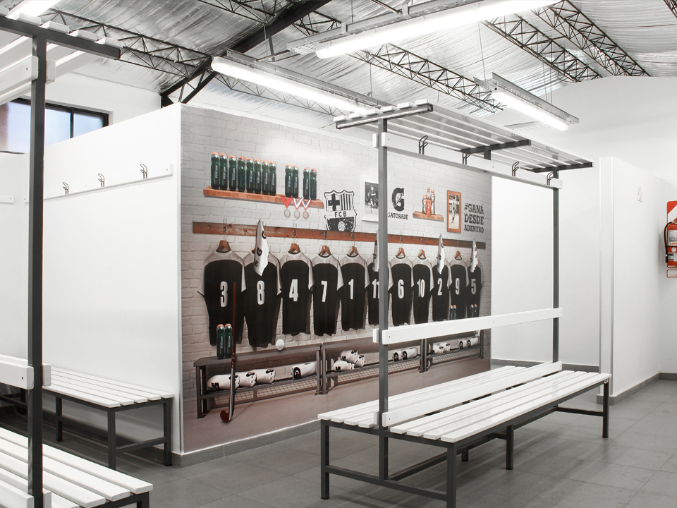
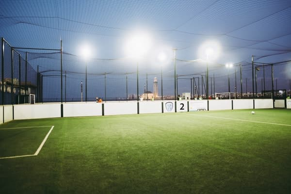

¿Buscas un lugar para jugar fútbol 5 o 7 con tus amigos?
En "Que pelota Gerson" contamos con unas instalaciones perfectamente capacitadas para ofrecerles partidos memorables, y una experiencia digna de disfrute para vos y tus compañeros.

SERVICIOS
Vestuario
Cómodos y espaciosos, nuestros vestuarios cuentan con baño, duchas y lockers para su comodidad, con piso antideslizante para su seguridad.
Kiosco/Bar
En nuestro kiosco/bar podrás encontrar variedad de bebidas, snacks surtidos y un servicio de bar para recargar tus energías antes de jugar o para sentarte con amigos a relajar o festejar después de un juego.

Estacionamiento
Nuestro estacionamiento cerrado e iluminado cuenta con cámaras de seguridad te brinda la tranquilidad para que jueges sin pensar qué le pueda pasar a tu vehículo.

Iluminación de Calidad
Contamos con reflectores led de 23000 lúmenes en cada una de nuestras canchas, para que te sientas en un estadio de verdad jugando con tus amigos.
Sistema de Ligas y Torneos
Ofrecemos un sistema de ligas y torneos que te permite competir con otros equipos y vivir la emoción del fútbol competitivo.

Parrilla
El complejo cuenta con una parilla, y un área reservada para disfrutar la comida, especial para comer un asado luego de un partido. El que pierde, paga el asado.

CANCHAS
Canchas con césped sintético, y preparadas para que vengas a disfrutar.
Elegí entre las mismas, y hace tu reserva.
CONTACTO
NUESTRA UBICACION

Sobre nosotros
¡Bienvenido a "Que Pelota Gerson"! En el corazón de la pasión por el fútbol, nace nuestro complejo "Que Pelota Gerson". Somos más que un lugar para jugar; somos un espacio donde la emoción y la camaradería se encuentran en cada rincón del campo. Desde nuestro comienzo, nos hemos comprometido a crear un ambiente vibrante y acogedor para los amantes del fútbol. Fundado por apasionados del deporte, "Que Pelota Gerson" ha crecido para convertirse en un punto de encuentro para la comunidad futbolística.